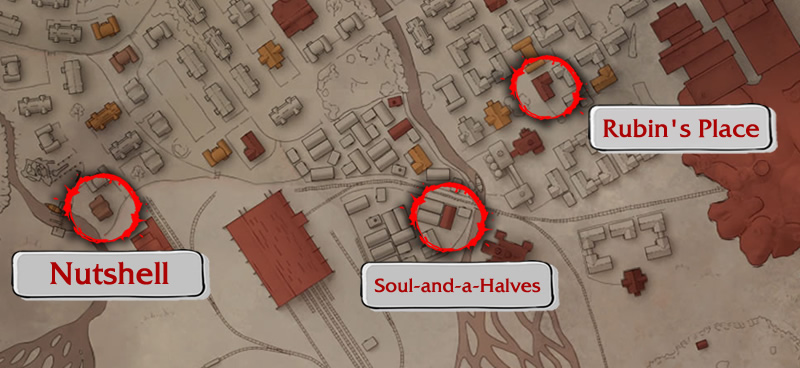
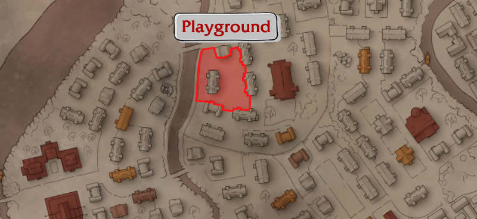

Only a few people have this item available for trade. See who they are below.


Welcome to our guide on Shmowders! Here, you'll find all the ways to obtain this rare item.


Only a few people have this item available for trade. See who they are below.
The primary way to obtain Shmowders is by trading with this famous girl. She may spawn along with other children at their gathering spots and is interested in the items listed below.

Character |
Wants: |
May have: |
||||||||||||||||||||||||||||||||||||||||||||||||||||||
|---|---|---|---|---|---|---|---|---|---|---|---|---|---|---|---|---|---|---|---|---|---|---|---|---|---|---|---|---|---|---|---|---|---|---|---|---|---|---|---|---|---|---|---|---|---|---|---|---|---|---|---|---|---|---|---|---|

|
|
|
||||||||||||||||||||||||||||||||||||||||||||||||||||||
Wants: |
||||||||||||||||||||||||||||||||||||||||||||||||||||||||
|
||||||||||||||||||||||||||||||||||||||||||||||||||||||||
- You can find below all the locations where children (including this girl) may spawn.

TIP: Stock up on those items this girl is interest in and carry them around whenever you plan to visit the children. Not only because it is rare for her to have it, but its price is really high too, so being prepared ensures you won't miss any.
Every night (with the exception of day 6) this merchant has a chance to have a Shmowder to trade, giving you yet another reason to see him regularly. Check out below all the items he is interested in and his location each night.

Character |
Wants: |
May have: |
|||||||||||||||||||||||||||||||||||||||||||||||||||||||||||||||
|---|---|---|---|---|---|---|---|---|---|---|---|---|---|---|---|---|---|---|---|---|---|---|---|---|---|---|---|---|---|---|---|---|---|---|---|---|---|---|---|---|---|---|---|---|---|---|---|---|---|---|---|---|---|---|---|---|---|---|---|---|---|---|---|---|---|

|
|
|
|||||||||||||||||||||||||||||||||||||||||||||||||||||||||||||||
Wants: |
|||||||||||||||||||||||||||||||||||||||||||||||||||||||||||||||||
|
|||||||||||||||||||||||||||||||||||||||||||||||||||||||||||||||||
- You can check out where to find this merchant each night on the map below.

TIP #1: This merchant only spawns on the map after midnight, and despawns at 7:30 in the morning. His location varies depending on the number of the day.
TIP #2: Stock up on items he is interested in and visit him regularly. Believe me, it's worth it!

These chests belong to the children of the Soul-and-a-Halves group and are hidden across all the map. Their contents are quite diverse and may include a Shmowder, althrough this is a rare occurrence. Every day at 7:30 AM, new items can be found in these chests.

- Check out below all the locations these chests are hidden.

TIP #1: If you drink a Twyrine (those green bottled drinks), your map will be marked with a relevant event OR a children's chest that has a slightly higher chance of containing a Shmowder (around 20%), as well as others useful items.
TIP #2: Since the spawn rate of Shmowders in children's chests is low, I don't recommend putting too much time and effort into trying to get them this way. However, a quick visit to chests along your planned path can still be worth it.

Another way of getting Shmowders is by completing certain events. These events are available on specific days and require some actions to be performed in a certain order to ensure their rewards.

- Check out these events below and the days they take place.

This event is split into two parts. The first one takes place at day 1. After just starting the game, go to Rubin's place and talk with the man there, after that, go to the Soul-and-a-Halves Fortress and speak with Notkin (the group leader). Tell him you want to help with the trial. After the talk, speak with him once more and tell him you are going to talk with Lajka personally. Notkin will give you a leash. After that, finishing the whole quest is optional. Keep the leash until day 4, that's when you can start the second part of this event. After the morning of day 4 begins, all you need to do is bring the leash to a house called "Nutshell" and trade it for a Shmownder with the girl sitting at a table.


This event takes place during the morning of day 2, at a children's playground near the theatre. All you need is 3x Nuts of any type (they don't all need to be the same). As soon as you arrive you will find a couple of kids on a swing, talk with them and show interest in their Shmownder, then accept their offer to play Hide and Seek. To start the game just get close to a wall and stare at it for at least 5 seconds. If everything works out fine, when you turn around, they will be hidden around the park. One of them can be found behind a couple of trash cans, another is hidden in the bushes, and the third one is around the nearby house. All of those children will have a special trade at this point. Two children will have really cheap Nuts for trade, you can basically get them for free, giving yours in return and then taking almost all of them back afterwards through subsequent trades. Finally, the girl of the group will trade her Shmownder for a few Nuts.

BEWARE: After finding each child, trade with them right off the bat. If you take too much time walking around, they might disappear!
TIP #1: Take advantage of this event by trading one Nut for two, leaving all the children with only one Nut in their inventory.
TIP #2: If the children refuse to hide at any cost the game may be bugged, in that case, close the game and load your latest save to try again.